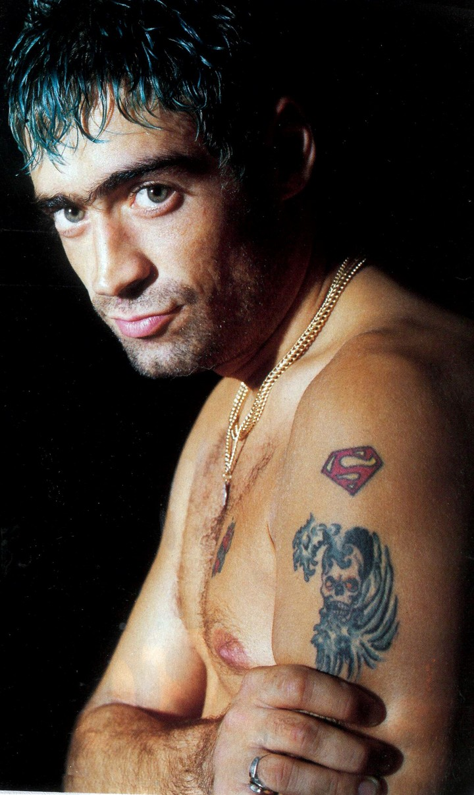

Rodrigo Alejandro Bueno nació el 24 de mayo de 1973 en Córdoba, Argentina. Desde muy joven estuvo vinculado a la música gracias a su familia, y con el tiempo se convirtió en una figura central del cuarteto. A lo largo de su carrera, lanzó numerosos éxitos y alcanzó una popularidad masiva a fines de los años 90. Su vida estuvo marcada por el éxito, pero también por un ritmo intenso que lo llevó a convertirse en una leyenda tras su fallecimiento en el año 2000.